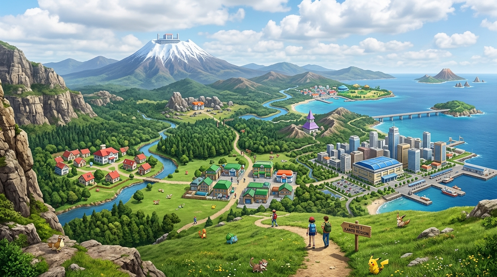

Kanto
Região #01 · 151 Pokémon

Notas do Professor sobre a Região:
" Kanto ! Um ótimo lugar para começar uma jornada Pokémon. A região é muito mais diversa do que parece — temos cidades movimentadas, florestas, cavernas, montanhas e até grandes áreas oceânicas!
Existem muitos Pokémon diferentes vivendo por toda a região, e cada ambiente é lar de espécies com características diferentes. No total, 151 espécies de Pokémon já foram registradas nas Pokedéx por aqui!
Não pense que a jornada será fácil! Kanto possui oito Ginásios Pokémon, cada um com seus próprios desafios, além da Elite dos Quatro, que reúne alguns dos treinadores mais habilidosos da região."
— Prof. Oak